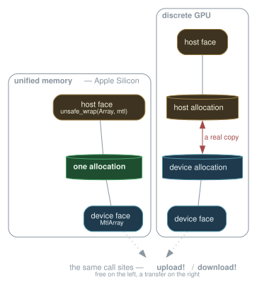
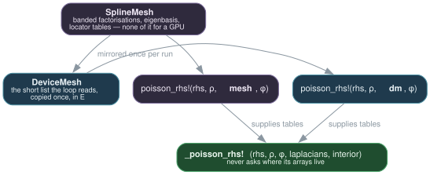
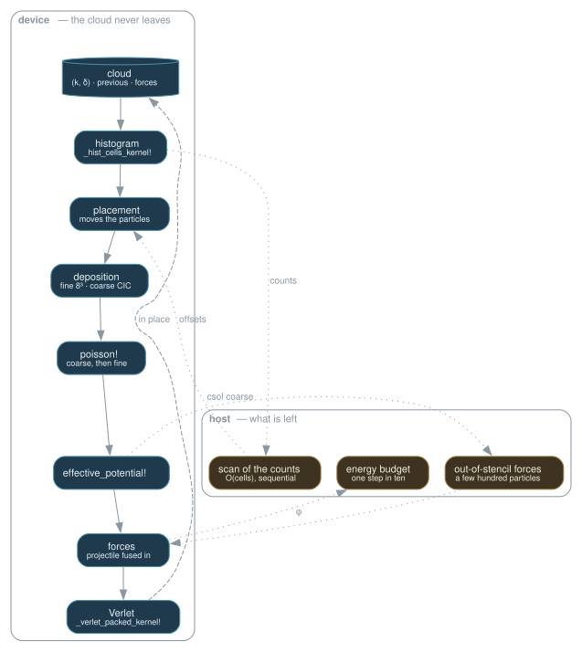
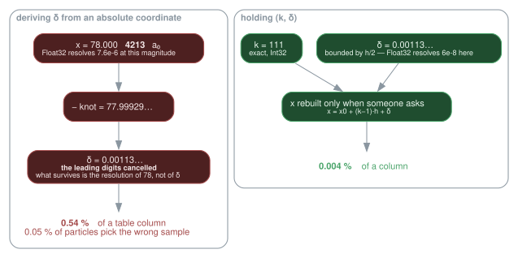
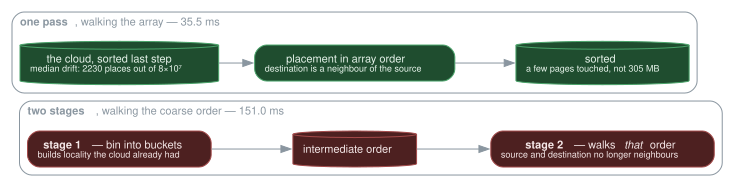

The device path
How the same source runs a time step on ten CPU cores or on a GPU, what had to change in the data to make that possible, and why each piece is shaped the way it is.
This page is about structure. The numbers that justify it are in Performance; where a decision rests on a measurement, the measurement is named and the figure quoted, but the log lives there.
The problem
A time step is two kinds of work in alternation.
Grid work — solve Poisson on n³ points, add exchange-correlation — costs O(n⁴) in the solver and is dominated by dense linear algebra. Particle work — deposit N particles onto the grid, read the field back at their positions, advance them — costs O(N) with a large constant.
At the thesis's scale (20 000 particles, 33³ points) the grid dominated. At the scale this code now runs (8×10⁷ particles, 222³ points) the particles are 79 % of a step, and the grid is almost free. Everything below follows from that one inversion: the target is the particle loops, and the tensor solver is not worth moving.
One kernel, every backend
The particle kernels are written once, in KernelAbstractions, and run wherever that package has a backend:
_deposit_sorted_kernel!(backend, groupsize)(args...; ndrange = ...)backend is CPU(), MetalBackend(), and in principle CUDA, ROCm or oneAPI — those three are untested here for want of the hardware. The payoff is not elegance but arithmetic that cannot drift apart: the CPU reference and the GPU path execute the same expression in the same order, so a discrepancy between them is a precision effect and never a second implementation of the physics.
What that replaced was four hundred lines of hand-written Metal. Measured against it at 4×10⁶ particles, the portable field kernel is ×0.999 and bit for bit identical, the deposition ×0.961. The extension that remains is 56 lines, and it holds exactly one thing.
The one thing that is genuinely Apple
Where the buffers live.
function Vlasov.dual_buffer(::Metal.MetalBackend, ::Type{T}, dims::Integer...)
mtl = MtlArray{T,length(dims),Metal.SharedStorage}(undef, dims...)
DualBuffer(mtl, unsafe_wrap(Array, mtl), true) # same bytes, two views
endOn Apple Silicon the CPU and the GPU address one pool of memory, so a DualBuffer's host and device faces are the same bytes and the transfers are free. On a discrete GPU they are two allocations and the transfers are real. Call sites do not change; only the price does.

Flattening this into a uniform "always copy" would cost Apple Silicon a copy of every buffer at every step, on the very machine the campaigns run on.
download! synchronises unconditionally, then copies only where the memories differ. A version that merely copied would order nothing on unified memory, and the host would read buffers the device had not finished writing. The bug is silent and looks like wrong physics — it was caught as a density that integrated to the raw particle count, the scaling kernel not having run yet.
Splitting every function in two
Nothing in src/ branches on a backend. Instead each function of the chain was split: one half takes the tables, one takes the object that holds them.
# the half that does the work — it never asks where its arrays live
_poisson_rhs!(rhs, ρ, φ, laplacians, interior)
# the two half-line methods that supply the tables
poisson_rhs!(rhs, ρ, mesh::SplineMesh, φ) = _poisson_rhs!(rhs, ρ, φ, mesh.laplacians, size(mesh))
poisson_rhs!(rhs, ρ, dm::DeviceMesh, φ) = _poisson_rhs!(rhs, ρ, φ, dm.laplacians, dm.interior)
DeviceMesh is then a mirror, not a reimplementation: it copies, once, the short list of tables the time loop actually reads, in the kernels' precision. The mesh itself keeps everything that has no business on a GPU — the banded collocation factorisations, the eigenbasis as eigen returned it, the locator tables.
The result is that poisson! on a host mesh and poisson! on a device mirror are the same code, and _update_forces_resident! is line for line its host twin with different arrays.
Residency: what stays where
A step touches three kinds of state, and each has one right home.
| State | Lives | Why |
|---|---|---|
Grids: ρ, φ, csol | device | written and read only by kernels |
| Mesh tables | device mirror | constant for the run, copied once |
| The cloud | device, as (k, δ) | see below |
| Sort counters | device, scan on host | the scan is O(cells) and sequential |
Two readbacks survive, and both are deliberate: the coarse coefficients come back for the handful of particles that left the fine grid, and the energy budget — a diagnostic taken one step in ten — reads the potential particle by particle on the host. On unified memory neither is a copy at all.
Drawn out, one step looks like this. Everything inside the shaded band runs as a kernel; only the three dashed arrows cross to the host, and two of them are diagnostics:

Before the cloud was held as (k, δ), two more arrows crossed that boundary on every step and carried the whole cloud with them: the packing read 8×10⁷ Float64 triples to produce (k, δ), and the forces were converted back to host Float64 for the integrator. Both are gone.
What it costs in memory
Counted on the live objects — every array a Simulation can reach, each once, the host and device halves of a DualBuffer being the same bytes on unified memory:
M ≈ 128·N + 249·n³ + 24·(n/2)³ + 25 MB everything
M_device ≈ 128·N + 91·n³ + 20 MB the device's share of it| model | measured | |
|---|---|---|
| 8×10⁷ particles on 222³ | 12.13 GiB | 12.15 GiB |
| 4×10⁶ particles on 90³ | 688 MiB | 686 MiB |
| the device's share of the first | 10.44 GiB | 10.47 GiB — and Metal's own currentAllocatedSize says 10.49 |
The per-particle term is exactly 128 bytes at both sizes, and it is the term that matters: the only one that grows with the physics one wants more of.
| buffer | bytes | |
|---|---|---|
particles | 48 | (k, δ) now and previous, one record |
sorted | 48 | where the sort places them before they are copied back |
force | 12 | three Float32 — and the cloud's forces is a view of it |
cols | 12 | the three table columns, for the deposition |
perm | 4 | the host route's permutation |
outlist | 4 | out-of-stencil particles, sized for the worst case |
What was there before, and was read by nobody
Measuring this is what found it. The same run held 160 bytes a particle and 1.6 GB of host scatter buffers — 4.1 GiB out of 16.3, a quarter of the footprint — allocated for host routines the device path had replaced, and that nobody had thought to stop allocating:
| at 8×10⁷ | why it was dead | |
|---|---|---|
cloud.forces, Float64 triples | 1.79 GiB | written once by the priming, read by nobody afterwards |
ScatterBuffers, one n³ array per thread and per level | 1.63 GiB | the host deposition's, and the deposit is on the device |
CellSort.keys, .perm, and its per-thread counters | 0.71 GiB | the host sort's, and the sort is on the device |
⚠️ None of them is deleted — each is allocated where the path that reads it can still be taken. The scatter buffers go when there is a device at all; the cloud's forces become a view of acc.force (StagedForces) only when the cloud is resident; the sort's buffers come back on first use (_ensure_buffers!), because an accelerator built for a resident cloud can still be handed a host-held one — the suite does exactly that, to compare the two force paths on one set of tables. perm alone stays allocated: it is a device array, and a device array cannot be grown on demand.
What fits on a machine
Same formula, a gigabyte left to the runtime:
| at 222³ | bound by | |
|---|---|---|
| Apple Silicon, 64 GB unified | ≈ 340 M | the construction, not the run |
| the same, steady state alone | 465 M | |
a 16 GB card, Float32 | 118 M | 128 B a particle on the card |
a 16 GB card with hardware Float64 | 75 M | PackedParticle{Float64} is 72 bytes |
an 8 GB card, Float32 | 55 M |
⚠️ The peak is at construction, not in the loop. sample_thomas_fermi builds positions and momenta as host Float64 triples before the packed cloud exists — 48 bytes a particle on top of the 128 — so a run that would fit comfortably can fail to start. Sampling in slices would remove it, and nothing else in the step comes near that peak.
⚠️ The card rows are arithmetic, not measurement: there is no such card here, and the portable kernels have never run on one. On a discrete card both halves of every DualBuffer are real allocations, so 118 M particles would also want some 19 GB of host memory beside the 16 on the card.
⚠️ And refining the grid costs twice. At a fixed 64 GB, 444³ leaves about 180 M particles — 220 per occupied cell against 730 today. The mesh gets finer while the density's sampling noise rises by 80 %.
The cloud, and why it changed shape
This is the part worth reading slowly, because the reason is numerical rather than architectural.
The obstacle
Every particle kernel wants the same two quantities: the index k of the nearest knot, and the offset δ = x − knot from it. Deriving them from an absolute coordinate means subtracting two nearby numbers, and in floating point that cancels the leading digits: the result keeps only the resolution the original magnitude allowed.
At 78 a₀ the Float32 ULP is 7.6e-6. A smoothing-table column is 1.42e-3 wide. So the error is 0.54 % of a column — and 0.05 % of particles land on the wrong side of a boundary and get the wrong Gaussian sample. That is a wrong discrete choice, not a rounding error that averages out.

For a long time the conclusion drawn from this was "the packing must run on the host, in Float64". It is the wrong conclusion. The obstacle is not the width of the type; it is forming the difference at all.
The fix: hold (k, δ), never re-derive it
PackedPositions stores the pair and rebuilds the absolute triple on access:
x = x0 + (knode − 1)·h + delta
└──────┬──────┘ └──┬──┘
exact, Int32 bounded by h/2δ is small, so Float32 resolves it to 6e-8 — a hundred times finer than the same type on an absolute coordinate. And because the type is an AbstractVector{NTuple{3,T}} that reconstructs on getindex, every existing reader of cloud.positions keeps working untouched.
A particle that has left the fine mesh keeps a virtual cell index — negative, or past the last knot — so the pair stays an exact description of where it is, with δ still small. Clamping belongs to the kernels that index a stencil, not to the representation. _cell_key is where it happens.
What it buys the integrator
The scheme is a position Verlet, and both of its observables are differences of positions:
q(t+dt) = 2q(t) − q(t−dt) + dt²·F/M ← a difference
p = M·(q(t+dt) − q(t−dt))/2dt ← a difference, and the energy is p²In the packed form the integer part k(t+dt) = 2k(t) − k(t−dt) is exact, and every rounding that remains falls on δ. Measured over 101 steps on the production cloud, against the same integrator on absolute Float32 coordinates: 2.55e-4 a₀ of drift against 1.03e-2, a factor 40 — and the gap widens with the step count.
And what it buys the step
The packing stage does not move to the device. It ceases to exist: the cloud is already in the form the kernels consume, held in the accelerator's own buffers, which the kernels already read. Three things go with it — the packing itself, the recomputation of the cell key by the sort, and the per-step conversion of 8×10⁷ force triples to host Float64.
The sort
Deposition is a scatter: each particle writes into 8³ = 512 grid points, and neighbours write into the same ones. Ordering the particles by cell turns that into one thread group per occupied cell, each thread owning one stencil point, walking the cell's particles in a register and performing one atomic at the end. It divides the atomics by the particles per cell — several hundred, at production scale.
The sort is a counting sort, O(N) and insensitive to the starting order. The thesis used PSRS instead, and for a reason that no longer applies: on a distributed machine, sorting particles is a communication problem and regular sampling balances the exchange. In shared memory there is nothing to balance.
What the placement costs, and why it is one pass
The counting sort's last pass is where the cost sits. It is not the atomics: separated by ablation at 8×10⁷ particles, the atomics are 16.9 ms and the scattered writes 107.2.
The cure is locality, and the lever is enormous. Confining the same writes to a window of destinations:
| window | 0.25 MB | 1 MB | 4 MB | 64 MB | 305 MB | sequential |
|---|---|---|---|---|---|---|
| ms | 5.7 | 6.0 | 15.7 | 62.0 | 106.2 | 1.84 |
A cloud in random order has no such locality, and it can be manufactured: bin the particles into buckets of neighbouring cells first, then sort within each. That two-stage placement is a real technique, and on a freshly sampled cloud it works — 118 ms down to 47.
It is the wrong answer here, because the cloud is never in random order. It was sorted at the previous step, and one step of drift moves a particle a median of 2230 places out of 8×10⁷: source and destination are already neighbours. The first stage then destroys that locality, by walking the particles in its own order rather than the array's. Measured on the cloud as the time loop leaves it:
| ms | |
|---|---|
| two stages, walking the coarse order | 151.0 |
| one pass, walking the array | 35.5 |

So _place_particles_kernel! is a single pass in the array's own order, and the buckets, their tuning and their intermediate buffer are gone with the first stage. The first step of a run pays a disordered placement once; every step after it walks a cloud it sorted itself.
The two-stage placement was the measured optimum — for a cloud arriving in random order. Sorting the particles rather than their keys changed that premise, and the same measurement now says the opposite. Neither figure was wrong; what they described stopped being the situation.
The cost the sort passes on
Sorting by fine cell puts consecutive particles in the same coarse cell, and the coarse deposition's eight atomics per particle then all land on the same few addresses at once. Measured: 4874 ms walking the sorted order against 193 walking it by a stride coprime with the particle count — a factor of 25.
_deposit_cic_kernel! therefore reads deliberately out of order. The sorted order is what makes the fine deposition fast and what makes this one slow; the same property, read by two kernels that want opposite things.
The counters must be reset — a repeated call otherwise accumulates them and the placement writes out of bounds. And the totals must go into their own buffer: writing them into partial[1] destroys the first chunk's counters, which the offset pass still needs. The price of forgetting is a segmentation fault.
Precision, stated plainly
The CPU Float64 path is the reference, and the only one comparable to the Fortran oracle at 1e-13. Apple GPUs have no double precision, so the device path works in Float32 and is validated against the reference rather than against the oracle.
| Quantity | Discrepancy, device vs reference |
|---|---|
| forces | 8.3e-06 in norm |
| density | 6.3e-07 |
| projectile energy loss over 20 steps | 3.9e-07 |
All far below the physical dispersion, which is 2 to 4 %. precision = Float64 on a backend that supports it makes the whole chain bit-comparable with the host again, and the test suite uses exactly that to pin the device path down.
Reading the code
| File | Lines | What lives there |
|---|---|---|
kernels.jl | 946 | every portable kernel: deposition, field, packing, sort, Verlet |
accelerator.jl | 632 | DeviceAccelerator, its buffers, the step's device half |
devicemesh.jl | 178 | DeviceMesh, the mirror, and the chain's device methods |
gpu.jl | 62 | the ForceAccelerator interface, and nothing else |
ext/VlasovMetalExt.jl | 56 | where the buffers live, and the Metal entry point |
A good order to read them in: gpu.jl for the interface, devicemesh.jl to see the split-in-two idea at its clearest, then accelerator.jl for the step, and kernels.jl last — it is the longest, but by then every one of its arguments has a home.